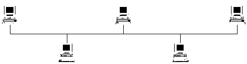
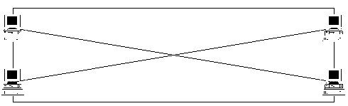
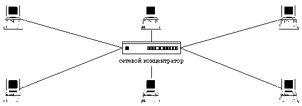

|
6.1. Выделенный канал связи между объектами
распределенной ВС
Все объекты распределенной ВС взаимодействуют
между собой по каналам связи. В п. 5.1.1
рассматривалась причина успеха УА, состоящая в
использовании в РВС для связи между объектами
широковещательной среды передачи которое
означает, что все объекты распределенной ВС
подключаются к одной общей шине (топология сети -
"общая шина" , рис. 6.1). Это приводит к тому,
что сообщение, предназначенное (адресованное)
только одному объекту системы, будет получено
всеми ее объектами. Однако только объект, адрес
которого указан в заголовке сообщения как адрес
назначения, будет считаться тем объектом, кому
это сообщение непосредственно направлялось.
Очевидно, что в РВС с топологией "общая шина"
необходимо использовать специальные методы
идентификации объектов (п. 6.2), так как
идентификация на канальном уровне возможна
только в случае использования сетевых
криптокарт.
Также очевидно, что идеальной с точки зрения
безопасности будет взаимодействие объектов
распределенной ВС по выделенным каналам.
Существуют два возможных способа организации
топологии распределенной ВС с выделенными
каналами. В первом случае каждый объект
связывается физическими линиями связи со всеми
объектами системы (рис. 6.2). Во втором случае в
системе может использоваться сетевой
концентратор, через который осуществляется
связь между объектами (топология "звезда" -
рис. 6.3).
|
Следует заметить, что в этом случае нарушается один из принципов, на которых строилась сеть Internet: сеть должна функционировать при выходе из строя любой ее части.
|

Рис. 6.1. Сетевая топология "общая шина".

Рис. 6.2 . Сетевая топология "N-объектов - N-каналов".

Рис. 6.3. Сетевая топология "звезда".
Плюсы распределенной ВС с выделенными каналами
связи между объектами состоят в следующем:
- передача сообщений осуществляется напрямую
между источником и приемником, минуя остальные
объекты системы. В такой системе в случае
отсутствия доступа к объектам, через которые
осуществляется передача сообщения, не
существует программной возможности для анализа
сетевого трафика;
- имеется возможность идентифицировать объекты
распределенной системы на канальном уровне по их
адресам без использования специальных
криптоалгоритмов шифрования трафика. Это
оказывается, поскольку система построена так,
что по данному выделенному каналу осуществима
связь только с одним определенным объектом.
Появление в такой распределенной системе
ложного объекта невозможно без аппаратного
вмешательства (подключение дополнительного
устройства к каналу связи);
- система с выделенными каналами связи - это
система, в которой отсутствует неопределенность
с информацией о ее объектах (п. 5.1.5). Каждый объект
в такой системе изначально однозначно
идентифицируется и обладает полной информацией
о других объектах системы.
К минусам РВС с выделенными каналами относятся:
- сложность реализации и высокие затраты на
создание системы;
- ограниченное число объектов системы (зависит от
числа входов у концентратора);
- сложность внесения в систему нового объекта.
Очевидно также, что создание глобальной РВС с
выделенными каналами потребует колоссальных
затрат и возможно на сегодняшний день.
Анализируя все плюсы и минусы использования
выделенных каналов для построения защищенных
систем связи между объектами РВС, можно сделать
вывод, что создание распределенных систем только
с использованием широковещательной среды
передачи или только с выделенными каналами
неэффективно. Поэтому представляется правильным
при построении распределенных вычислительных
систем с разветвленной топологией и большим
числом объектов использовать комбинированные
варианты соединений объектов. Для обеспечения
связи между объектами большой степени
значимости можно использовать выделенный канал.
Связь менее значимых объектов системы может
осуществляться с использованием комбинации
общая шина-выделенный канал.
В данном пункте были рассмотрены варианты
сетевых топологий с выделенными каналами связи.
При этом рассматривались только физические
каналы связи и предлагались более или менее
безопасные способы взаимодействия объектов
системы по этим каналам. Однако выбор безопасной
топологии РВС является необходимым, но отнюдь не
достаточным условием для создания защищенных
систем связи между объектами распределенных ВС.
Итак, в завершение данного пункта сформулируем
первый принцип создания защищенных средств
связи объектов в РВС:
Утверждение 1.
Наилучшее с точки зрения безопасности
взаимодействие объектов в распределенной ВС
возможно только по физически выделенному каналу.
|